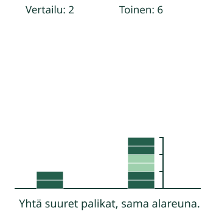
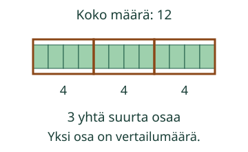

Kolme kertaa toinen torni
Aavan tornissa on 2 samanlaista palikkaa. Loikka haluaa kolme kertaa niin korkean tornin. Riittääkö viisi palikkaa?
Rakennan määrän, joka on monta kertaa toinen määrä.
Vertailumäärä on yksi kokonainen osa
Aavan kaksi palikkaa ovat vertailumäärä. Loikan torniin tarvitaan se kolme kertaa: 2 + 2 + 2 = 6. Kerroin on kolme.

Mieti
Mitä kolme palikkaa enemmän tarkoittaisi?
Paljasta ajatus
Se olisi 2 + 3 = 5. Kolme enemmän ja kolme kertaa niin paljon tarkoittavat eri asiaa.
Toista vertailuosa
Kokeile itse
Entä kun kerroin puuttuu?
Aavalla on 3 palikkaa ja Loikalla 12. Kolme mahtuu kahteentoista neljä kertaa: 3, 6, 9, 12. 12 on 4 kertaa niin paljon kuin 3. Erotus 9 kertoo, montako palikkaa enemmän, ei montako kertaa.
Uusi tilanne: tarrat
Loikalla on 12 tarraa. Se on kolme kertaa Aavan määrä. Jaetaan 12 kolmeen yhtä suureen osaan. Yhdessä on 4, joten Aavalla on 4 tarraa. Tarkistus: 3 × 4 = 12.

Tutki lisää
Yksi kerta tarkoittaa samaa määrää: 1 × 3 = 3. Myös 2 × 2 ja 2 + 2 antavat molemmat 4. Sama tulos yhdessä esimerkissä ei tee laskutavoista samaa sääntöä. Kokeile kolmen vertailumäärällä: 2 × 3 = 6 mutta 3 + 2 = 5.
Opettajalle ja ilman ruutua
Luokat 3–6, selkeä kieli myös nuorelle lukijalle. Vaadittu on M-MUL-01. M-DIV-02 on vahva tuki, ei kova portti. Inverssit voi löytää kopioimalla tai jakamalla kuvassa yhtä suuriin osiin. Taulujen ulkoa muistamista tai jakolaskumerkin käyttöä ei vaadita.
Käytä keskenään samanlaisia palikoita yhteisellä alareunalla tai paperiliuskoja, joihin yksi vertailuosa toistuu. Tornin korkeus vastaa määrää vain, kun palikat ovat yhtä korkeita. Oikeiden erikokoisten kirjojen pino ei sellaisenaan ole tarkka määrämalli. Alkuperäinen SVG käyttää saman kokoisia vierekkäisiä palikoita ilman korkeutta muuttavia välejä. Toistossa syntyy uusi samanlainen osa; se ei esitä yhden säilyvän kappalejoukon siirtämistä.
Esimerkeissä vertailumäärät ovat 2–4, kertoimet 1–4 ja tulot enintään 16. Vastauskenttä ja torni sallivat 0–20. Kerroinkysymyksessä vertailumäärä on aina positiivinen: nollaan vertaaminen ei yksikäsitteisesti määritä kerrointa. Ei murtokertoimia tai yleistä suhdelaskua. Näkyvät lähtötiedot pysyvät erillään ehdotetusta vastauksesta.
Kaikki oikeaan kysyttyyn määrään johtavat menetelmät ovat sallittuja. Numero ei kerro käytettyä strategiaa, itsenäistä tuottamista, fyysistä rakentamista tai muistamista. Apua saa käyttää, puhetta tai esineiden nimeämistä ei vaadita. Malli ja apuviivat eivät vaihda tehtävän oikeaa vastausta. Ei henkilötallennusta tai formaalia prosessinäyttöä. Ilman JavaScriptiä esimerkit ja palikoilla tehtävä harjoitus säilyvät.
Lopuksi: 12 on kolme kertaa niin paljon kuin 4. Mikä on vertailumäärä? Mikä on kerroin?